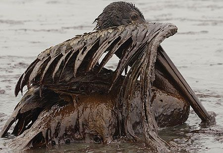
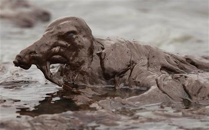
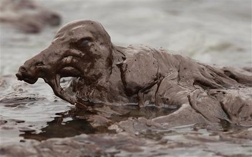

Content Area
Hello

Hello
Nearly 85 percent of the 29 million gallons of petroleum that enter North American ocean waters each year as a result of human activities comes from land-based runoff, polluted rivers, airplanes, and small boats and jet skis, while less than 8 percent comes from tanker or pipeline spills, says a new report from the National Academies' National Research Council
Each year over 500,000 birds die worldwide due to oil spills. When birds get oiled, their outer feathers clump together and are unable to repel water which penetrates the inner down feathers, eliminating their insulating value. They then become hypothermic and die of exposure; some will sink and drown. Birds that do make it to shore are easy prey for predators as they can no longer fly.
 


Air pollution is the result of the release of contaminants into the air through many forms of emissions. These contaminants can prove harmful to the health of both human and animal life because they linger in the air that all living things must breathe in order to survive. The most common source of emitting such pollutants is from the burning of fossil fuels, which we depend on for generating energy. Fossil fuels release harmful chemicals into the atmosphere, which can affect the health of many. Another form of contaminant can be carbon dioxide, which is the main contributor to climate change since it raises the Earth’s temperature. Smog is also formed when these contaminants are mixed with sunlight.